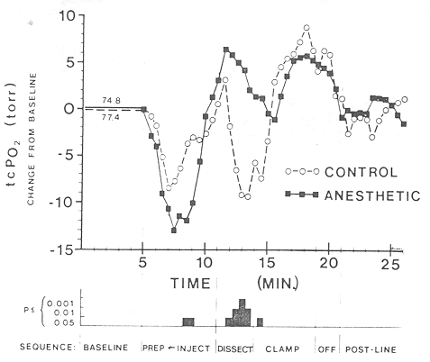
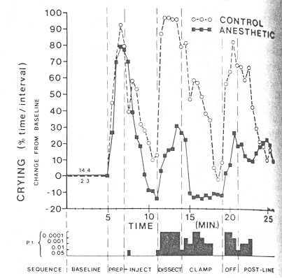
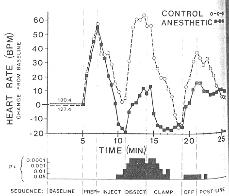

THE CIRCUMCISION REFERENCE LIBRARY
From the University of Iowa and Clinics, Iowa City
ABSTRACT. To evaluate the effectiveness of the dorsal penile nerve block in reducing the stress of circumcision upon newborns, physiologic measurements in 30 healthy full-term infants (including transcutaneous oxygen levels, crying time, heart rate, and respiratory rate) were monitored continuously before, during, and after the operation. Infants receiving the dorsal penile nerve block with lidocaine (1% Xylocaine) (N = 20) experienced significantly less stress, as evidenced by smaller decreases in transcutaneous oxygen pressure levels, less time spent crying, and smaller increases in heart rate, than infants circumcised in an identical manner without anesthetic (N = 10). No complications resulted from injection of the local anesthetic or from the circumcision procedure itself. Inasmuch as dorsal penile nerve block has a low complication rate, is simple to learn, and adds little time or expense to the overall procedure, and if it proves to be as effective clinically as the physiologic data indicate, the dorsal penile nerve block should be considered for every infant undergoing circumcision. Pediatrics 1983;71:36-40; newborn circumcision, local anesthesia, neonatal stress.
Kirya and Werthman1 have developed a local anesthetic technique for newborn circumcision called the dorsal penile nerve block. The 52 infants they studied experienced a low complication rate: one infant's circumcision bled slightly and one infant developed a small hematoma at the injection site. Kirya and Werthman reported that the infants who received the injection seemed quieter, but this factor was not compared using a control group. Kirya and Werthman did not measure the pain contributed by the injection itself, did not report the effects of the lidocaine (Xylocaine) on the newborn, and did not look for subsequent genitourinary side effects or the longer term behavioral effects.
The circumcision of full-term male infants has frequently been used as a model to study the physiologic response of newborns to pain. Adrenal cortical response2 immediate postoperative behavior,3and possibly long-term behavior4 heart rate, respiratory rate, and levels of transcutaneous Po25 are all altered in a manner that has been attributed to the pain response. Some suggest that newborns do not feel pain because their nerve pathways are not sufficiently myelinated to transmit painful stimuli.6 Some practicing physicians think that newborn circumcision does not require anesthesia because it is comparitively brief. The physiologic evidence contradicts both of these positions.
The current controlled study was undertaken to determine the effectiveness and risks of the dorsal penile nerve block in reducing some of the stress-induced physiologic alterations of newborns who undergo circumcision without anesthesia. If the dorsal penile nerve block is safe, effective, and easily implemented into current clinical practice, it should be learned and utilized by every physician who circumcises newborns.
SUBJECTS AND METHODS
Newborn male infants admitted to a major university medical center were screened for entry into the study after circumcision consent had been obtained by the medical staff. Thirty newborns were selected for the study, after parental informed consent for participation was obtained. Each infant had voided following delivery and was clinically well. Additional screening for acceptance into the study included: one- and five-minute Apgar scores greater than 7; birth weight between 2,500 and 4,500 g; age at operation between 24 and 72 hours; systolic blood pressure greater than 40 mm Hg immediately before the operation (to assure adequate perfusion pressure for accurate measurement of transcutaneous Po2 levels); and gestational age by Dubowitz score of 38 to 42 weeks. Twenty infants were randomly assigned to the test group and ten to the control group, by the assignment of each eligible cluster of three in the order of control, anesthetized, and unanesthetized. Ten unanesthetized infants had previously been studied during circumcision by Rawlings et al5; therefore only ten additional control infants were included. The mean values for each of the screening criteria by groups are shown in Table 1. There was no significant difference between groups for any of the entry data categories.
Each infant studied was continuously monitored for a total of 26 minutes. Rawlings et al,5 who monitored transcutaneous Po2 heart rate, and respiratory rate, waited five minutes between each step in the operative sequence for restabilization of the physiologic variable making the total time of study 60 minutes for each infant. Inasmuch as an actual circumcision procedure in clinical practice only takes approximately eight to ten minutes, the operation in this study was kept in sequence without waiting between each step to make the results parallel clinical practice. A transcutaneous oxygen electrode (TCM1 Radiometer was affixed to the skin below the right clavicle for transcutaneous Po2 monitoring. The electrode was thermally insulated with a polystyrene cap so that the electrode heat consumption served as an induced measure of local blood flow. Respiratory and heart rate were measured by impedance pneumographsy and ECG modules respectively. Crying time was recorded by an event marker pen. All measurements were continuously recorded by a Grass model polygraph. Throughout the study, a radiant overhead warmer maintained the abdominal temperature at approximately 36.0oC. All infants were studied in a quiet room and were handled identically. All injections of the anesthetic and all circumcisions were performed by the principal investigator in an identical manner. No nipple or pacifier was given to any infant, as nonnutritive sucking may alter the transcutaneous Po2 measurement. All infants had received nothing by mouth for at least two hours, and they were taken to the study area from the nursery in a quiet resting state.
After the monitoring equipment was attached, each infant was further screened for acceptance into the study by demonstrating a stable five-minute base line transcutaneous Po2 greater than 65 torr (labelled "baseline" in the figures). During the base line period, some infants continued to sleep, and others were alert or crying part of the time. Each infant was strapped onto the the restraint board, and the genital area was given a surgical scrub with povidone-iodine solution for one minute (these events are labeled "prep" in the figures). Subjects in the test group then received 0.2 to 0.4 ml of lidocaine (without epinephrine) injected subcutaneously over each dorsal nerve bilaterally, following the technique of Kirya and Werthmann1 (labelled "inject" in the figures). The control group was monitored undisturbed through an equivalent four-minute period without an injection (labelled "inject" in the figures).
TABLE 1. Screening Data.
Selection Criteria Anesthetized Control Group (N=20) Group (N = 10) Apgar score 1 min 8.1 ± 0.5 7.9 ± 0.9 5 min 8.9 ± 0.4 9.2 ± 0.4 Birth weight (g) 3,662 ± 328 3,368 ± 250 Age at operation (h) 38.9 ± 9.4 39.0 ± 11.4 Systolic B before op- 554 ± 13.4 552 ± 11.8 eration (mm Hg) Gestational age 39.4 ± 1.2 39.4 ± 1.2 Baseline (transcutan- 74.8 ± 9.1 7.4 ± 9.1 eous Po2 (torr) <hr>
A three-minute period was allowed for dissection of the prepuce-glans plane, clamping and division of the dorsal prepuce, and turning the prepuce back to the corona in each infant (labelled "dissect" in the figures). A bloodless circumcision clamp (Gomco) was applied for five minutes before the foreskin was amputated (labelled "clamp" in the figures). The clamp was then removed, the infant was released from the circumcision board restraints, and a petroleum dressing was applied to the penile incision (labelled "off" in the figures). A five-minute postoperative period was monitored at the end of each procedure (labelled "post-line" in the figures).
Continuous changes from the five-minute base line in the transcutaneous Po2, heart rate, repiratory rate, and crying were recorded for each infant in 30-second intervals. Group means were compared by matched 20-second intervals. Statistical analysis was by unpaired τ tests for each 30-second interval sequentially throughout the study period by group. Inasmuch as the variance for some of the data did not meet the assumptions for homogeneity, a non-parametric test was used when appropriate (Mann-Whitney).
RESULTS
The transcutanous Po2 for both groups decreased when the infants were strapped onto the circumcision restraint board and during the iodine scrub (Fig 1). Injection of the lidocain in the anesthetized group delayed the time for return of the transcutaneous Po2 toward the baseline 90 seconds, compared with the almost immediate posthandling recovery for the infants who did not receive injections. Usually a decrease in transcutanous Po2 level is followed by a rebound above base line level.5 Both groups of infants in this study displayed this response. After dissection of the prepuce-glans plane began (subsequent to waiting four minutes for the local block to take effect), the anesthetized gourp demonstrated a drop of 6 torr from the elevated transcutaneous Po2 rebound level back toward the base line. The control group averaged a 12-torr drop below base line transcutaneous Po2 during the three minute dissection period. The transcutaneous Po2 values of both groups rebounded after the decrease that occurred when the Gomco clamp was applied and remained above the base line levels until the infant was unstrapped and the petrolatum dressing was applied.
 Fig 1. Continuous recording of transcutaneous Po2 change from base line levels (control group mean of 77.4 and anesthetized group mean of 77.4 torr) before, during, and after circumcision. Statistically significant differences (unpaired τ tests), as calculated for each 30-second interval, are in bar graph at bottom, and correpond to each step in sequence.
The amount of crying by each group of infants during the procedure is shown in Fig. 2. Both groups cried during the initial handling and scrub, and there was significantly more crying in the test group at the point of the anesthetic injection (P > .05). However, the anesthetized group displayed less crying than the control group by the end of the four minutes required for the anesthetic to become effective. When the dissection of the preputial planes began, a dramatically significant difference between groups became evident. For the first 30-second interval of the operation, the anesthetized group's mean time spent crying was 2.8% ± 33.6% per interval compared with the control groups's 87.0% ± 10.6% (P > .001 by the Mann-Whitney U test). Some anesthetize infants slept during the dissection procedure.
 Fig 2. Continuous recording of percent of time spent crying during each 30-second interval, adjusted for baseline "irritibility" (control group mean of 2.3% compared with mean of 14.4% for infant later receiving anesthetic before, during and after circumcision. Statistically significant differences (by unpaired τ tests), as calculated for each 30-second interval, are in bar graph at bottom, and correspond to each step in sequence.
Similar elevations in heart rate were recorded in both groups during the initial handling and scrub (Fig. 3). There was no significant difference between groups during the injection period. The anesthetized group's heart rate returned to the base line before that of the control group prior to dissection. The anesthetized group's heart rate continued to decrease below the base line to a relative bradycardia. A significant difference in the heart rates between groups was observed during the dissection and following the application of the circumcision clamp (P > .0001). Both groups demonstrated heart rates lower than base line while resting undisturbed toward the end of the five-minute period that the clamp remained in place. The unstrapping of the infant from the circumcision restraint board produced an elevation in heart rate in both groups. Handling of the penis to apply the petrolatum dressing produced a statistically significant elevation in heart rate in the unanesthetized group compared with heart rate of the anesthetized group (P > .05). The heart rate of both groups had returned to near preoperative base line values by the end of the five minute postoperative monitoring period.
 Fig 3. Continuous recording of heart rate change from base line (control group's mean of 127 beats per minute and anesthetized group as mean of 130.3 beats per minute) before, during, and after circumcision. Statistically significant differences (unpaired τ tests) calculated for each 30-second interval are in bar graph at bottom corresponding to each step in sequence.
Physiologic variables of the two groups for the 30-second injection interval are shown in Table 2. A similar comparison of physiologic variables for the three minutes during dissection is shown in Table 3. Respiratory rates did not differ significantly between groups at any time during the 26 minutes of the study. Although respiratory patterns varied with periods of crying (characterized by a slower respiratory rate) and subsequent hyperventilation, the mean respiratory rates between groups for equivalent 30-second intervals did not reflect specific pattern changes.
DISCUSSION
Although only the two dorsal penile nerves are targeted by the injection of the lidocaine, the ventral frenular penile nerve also seemed to be blocked by infiltration and extension within the potential subcutaneous space of the newborn's penis. This circumferential "ring-like" block at the base of the penis appeared to reduce the pain response effectively, as evidenced by the absence of an immediate cry when the hemostat was applied to the ventral prepuce after the four-minute wait for the anesthetic to take effect. The mean time for the physiologic variables to return to base line levels is an indirect indication of when effective blocking of pain may have been achieved. These mean values were as follows: transcutaneous Po2 1.4 ± 0.7 torr, cry time 2.9% ± 1.2% per interval, and heart rate 1.7 ± 0.7 beats per minute. These data suggest that the two- to three-minute waiting period described by Kirya and Werthmann should usually be adequate. However two infants who received injections appeared to require five and seven minutes, respectively, for the anesthetic to take complete effect; these infants were eliminated from the study. Waiting time for the anesthetic to become effective should, therefore, be individualized. Prior to dissection, the prepuce should be tested with a hemostat and the operation should begin if or when no cry response is obtained.
TABLE 2. Changes from Baseline for Physiologic Variables During 30-Second Interval of Injection for Anesthetized Group v Control Group (No Injection)*
<hr> Physiologic Variable Anesthestized Control (Change from Base Line) Group Group Transcutaneous Po2 -13.0 ± 7.6 -7.7 ± 7.7 (torr) Cry Time† (% interval) 70.3 ± 27.2 39.3 ± 36.6 Heart Rate (beats/min) 42.7 ± 39.3 36.3 ± 24.8 <hr> *Values are means ± SD. †P > .05 by unpaired τ test.
Preoperative handling in both groups produced physiologic changes that were significantly different from the base line, and deserve further attention. Perhaps changing the method of restraint to swaddling, or warming the scrub solution would reduce this response. These physiologic changes induced by the preoperative handling were greater than the physiologic response to the injection of the anesthetic. Inasmuch as the difference between the anesthetized group and the control group for the 30-second interval during the injection was significant only in crying and did not extend beyond the immediate event, pain caused by the injection is not sufficient to condemn its use.
TABLE 3. Changes from Base Line for Physiologic Variables Comparing Anesthetized Group to Control Group Throughout Three-Minute dissection Period*
<hr> Physiologic Variable Anesthetized Control Group Group Transcutaneous Po2 4.6 ± 8.5 -4.7 ± 10.6 (torr) Cry time† (% interval) 16.7 ± 40.3 93.1 ± 15.3 Heart rate‡ (beats/min) 3.4 ± 26.9 54.1 ± 17.8 <hr> *Values are means ± SD. †P > .0001 by unpaired τ test. ‡P > .001 by unpaired τ test.
The half-life of lidocaine blood levels in neonates is four hours.8 The dose of 4 to 8 mg given subcutaneously in infants weight 2,500 to 4,500 g may have produced some generalized pharmacologic effect. Local anesthetic administration has been shown to depress spinal reflex activity.9 However, the time of first postoperative voiding was sooner for the anesthetized group than for the control group (5.2 ± 2.6 hours compared with 7.2 ± 4.5 hours in he control group), indicating no disruption of urologic function by the anesthetic. Other complications for which infants were observed by the nursing staff included bleeding, infection, and injection site hematomas. A physical examination was also performed 24 hours after circumcision. No short-term complications from the dorsal penile nerve block were observed during the course of this study.
The relative bradycardia occurred in both groups at the end of the "clamp" period. It may have been due to the depression of the heart rate commonly observed clinically following crying, or perhaps it was due to the anesthetic, or perhaps it was due to other unknown factors.
The physiologic changes reported here show that newborns are responsive to pain, but these changes do not fully reflect all aspects of the pain response. The physiologic changes in themselves are probably not detrimental to the well-being of healthy term infants. However, they do indicate pain by stress-directional changes in objective measures that do not occur in anesthetized infants. This level of pain would not be tolerated by older patients. In sick or premature infants who have endured other painful unanesthized procedures, the physiologic changes may be large enough to be clinically significant.
Although infants cannot verbally describe pain, the experiences may have profound physiologic and physiological effects. In addition to simply recording the amount of crying, a voice pattern analysis might distinguish cries of pain from other types of crying. One study using spectrographic analysis of newborn cries identified potentially abnormal infants, monitored recovery of sick infants, and predicted recovery of brain-damaged infants.10 This technique might be useful in the study of infant pain as well.
In conclusion, the physiologic pain-stress response of well, normal, full-term male newborns to unanesthetized circumcision is significantly different from the response of infants circumcised under local anesthetic. Whenever the use of a local anesthetic is as simple as infiltrating lidocaine subcutaneously, adds little time or risk to the primary procedure, and is not otherwise contraindicated, it should be considered for its effectiveness in reducing the physiologic pain-stress response of newborns.
IMPLICATIONS
This study has implications for other procedures performed on unanesthetized infants, such as chest tube insertions and lumbar punctures. Sick and premature infants may be at risk for ever more deleterious effects than physiologic stress response measured here in healthy, full-term infants.
Studies assessing the short-term behavioral changes produced in newborns circumcised without anesthesia have revealed sleep disturbances.11,12 A controlled blind study using the Brazelton Neonatal Behavioral Assessment Scale showed that 90% of the infants changed behavior categories after being circumcised without an anesthetic, when examined at one day and at 3 weeks, respectively, after surgery.3 Some long-term behavioral consequences of unanesthetized newborn circumcision were suggested by studes of infant gender differentiation.4 Short- and long-term behavioral and physiological effectiveness and side effects of using a local anesthetic in newborns merit further evaluation.
SUMMARY
The effectiveness of the dorsal penile nerve block in reducing the stress of neonatal circumcision was evaluated by monitoring several physiologic variables in 30 healthy full-term newborns. Transcutaneous oxygen levels, crying time, heart rate, and respiratory rate were monitored before, during, and after circumicision. Newborns receiving the 1% Xylocaine subcutaneous injection experienced significantly less stress, as evidenced by smaller decreases in transcutaneous oxygen levels, less time spent crying, and smaller increases in heart rate, than infants circumcised without an anesthetic. Inasmuch as the dorsal penile nerve block presents little additional risk, is simple to learn, adds little time or expense to the overall procedure, and appears to reduce the physiologic stress, it should be utilized for every newborn undergoing circumcision so long as it is not otherwise contraindicated.
REFERENCES
http://www.cirp.org/library/pain/williamson/